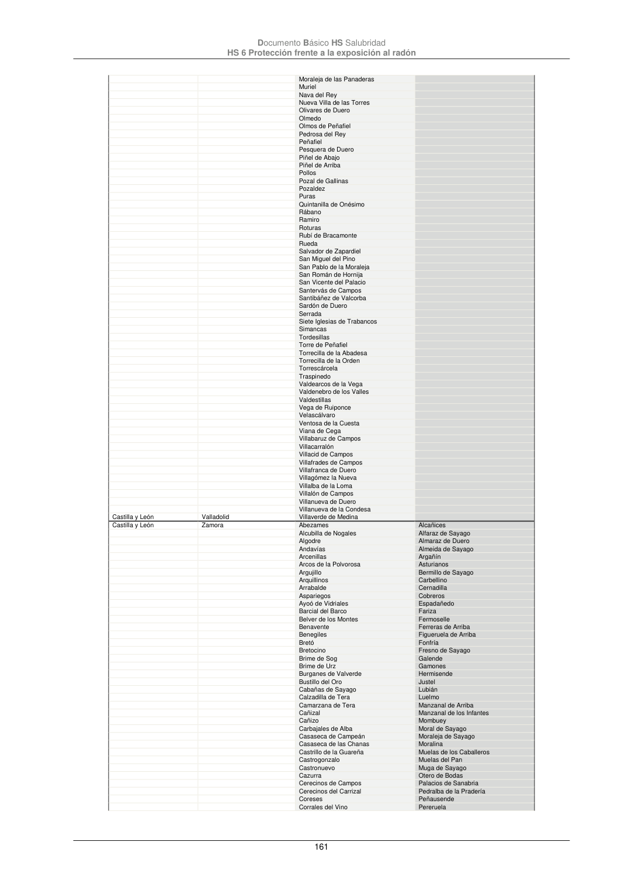

DB-HS Salubridad · edición 2022-06-14 · capa oficial
Documento DB-HS-oficial · SHA-256 del PDF 68df3caacc95f71aee2ec1ba7b2c65ae66155c21e3a8785521b8fdd4fd640d3b
Página física 161 de 184.
Copia fiel del PDF fuente · Fuente oficial
Ficha de la disposición en la fuente oficial
Formato: Texto de la página (Markdown)
Documento Básico HS Salubridad HS 6 Protección frente a la exposición al radón 161 Moraleja de las Panaderas Muriel Nava del Rey Nueva Villa de las Torres Olivares de Duero Olmedo Olmos de Peñafiel Pedrosa del Rey Peñafiel Pesquera de Duero Piñel de Abajo Piñel de Arriba Pollos Pozal de Gallinas Pozaldez Puras Quintanilla de Onésimo Rábano Ramiro Roturas Rubí de Bracamonte Rueda Salvador de Zapardiel San Miguel del Pino San Pablo de la Moraleja San Román de Hornija San Vicente del Palacio Santervás de Campos Santibáñez de Valcorba Sardón de Duero Serrada Siete Iglesias de Trabancos Simancas Tordesillas Torre de Peñafiel Torrecilla de la Abadesa Torrecilla de la Orden Torrescárcela Traspinedo Valdearcos de la Vega Valdenebro de los Valles Valdestillas Vega de Ruiponce Velascálvaro Ventosa de la Cuesta Viana de Cega Villabaruz de Campos Villacarralón Villacid de Campos Villafrades de Campos Villafranca de Duero Villagómez la Nueva Villalba de la Loma Villalón de Campos Villanueva de Duero Villanueva de la Condesa Castilla y León Valladolid Villaverde de Medina Castilla y León Zamora Abezames Alcañices Alcubilla de Nogales Alfaraz de Sayago Algodre Almaraz de Duero Andavías Almeida de Sayago Arcenillas Argañín Arcos de la Polvorosa Asturianos Argujillo Bermillo de Sayago Arquillinos Carbellino Arrabalde Cernadilla Aspariegos Cobreros Ayoó de Vidriales Espadañedo Barcial del Barco Fariza Belver de los Montes Fermoselle Benavente Ferreras de Arriba Benegiles Figueruela de Arriba Bretó Fonfría Bretocino Fresno de Sayago Brime de Sog Galende Brime de Urz Gamones Burganes de Valverde Hermisende Bustillo del Oro Justel Cabañas de Sayago Lubián Calzadilla de Tera Luelmo Camarzana de Tera Manzanal de Arriba Cañizal Manzanal de los Infantes Cañizo Mombuey Carbajales de Alba Moral de Sayago Casaseca de Campeán Moraleja de Sayago Casaseca de las Chanas Moralina Castrillo de la Guareña Muelas de los Caballeros Castrogonzalo Muelas del Pan Castronuevo Muga de Sayago Cazurra Otero de Bodas Cerecinos de Campos Palacios de Sanabria Cerecinos del Carrizal Pedralba de la Pradería Coreses Peñausende Corrales del Vino Pereruela

Datos candidatos: compruebe celdas y notas en el PDF.